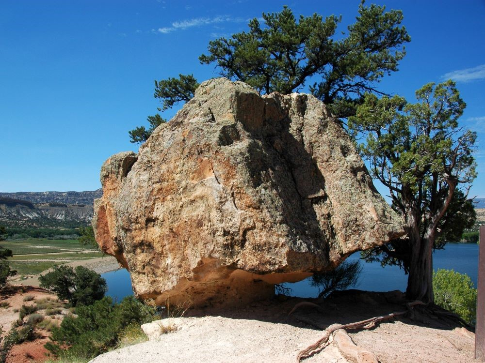
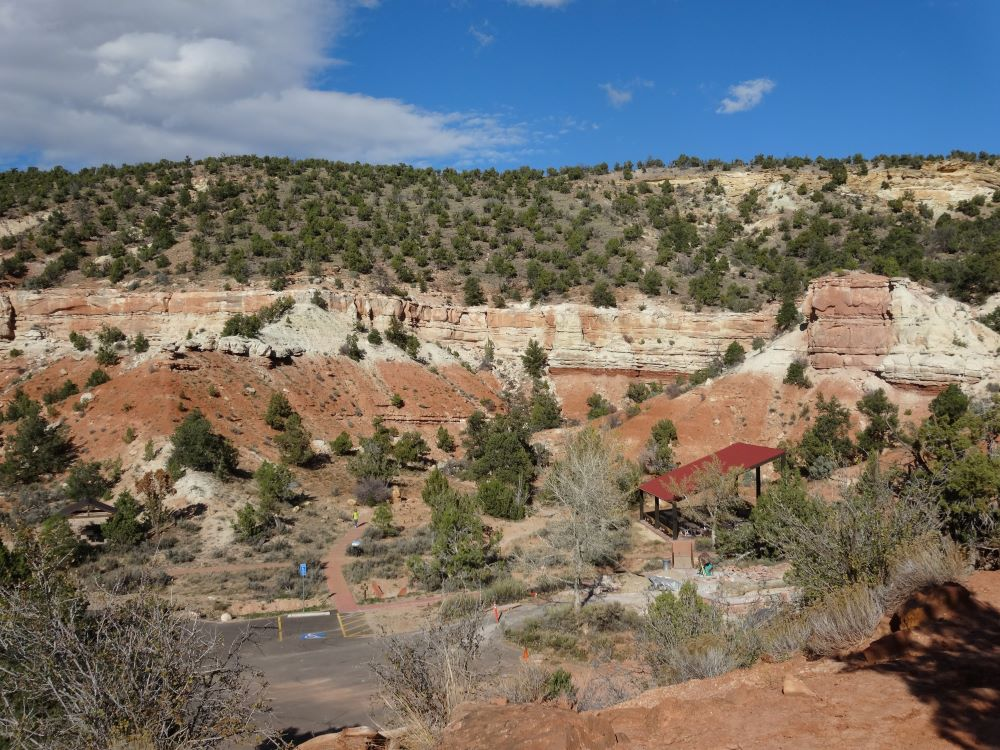
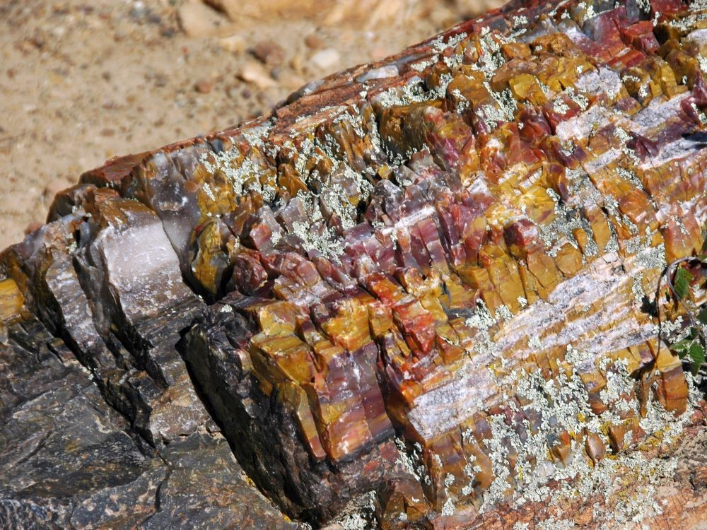
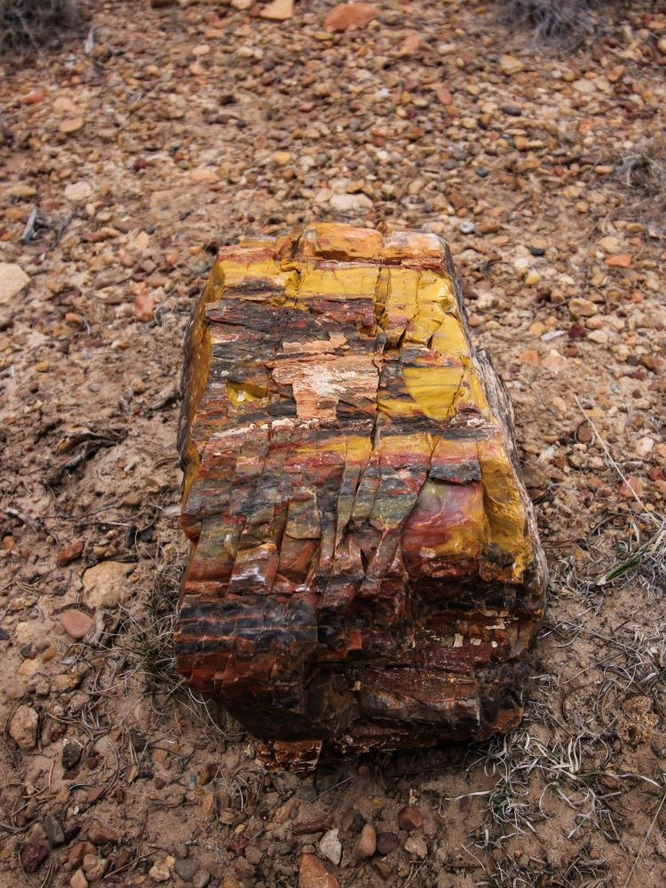

_62.jpg){kind=link}
State park featuring colorful petrified wood, scenic hiking trails, and a reservoir for boating, fishing, and swimming.
General Information
Winter: 8am–6pm
Camping: $25–$35 per night depending on site
How to Get There
From Escalante (1 mi): Drive west on UT-12 for 1 mile, then turn right onto Reservoir Road and follow signs to the park entrance.
Overview
Escalante Petrified Forest State Park is a Utah state park that protects a mesa strewn with colorful petrified wood, the fossilized remains of conifer trees buried by sediment roughly 135 to 155 million years ago. Silica from groundwater replaced the wood over time, and iron and manganese minerals gave the logs their orange, red, yellow, blue and purple tones. The park opened to the public in 1976 and covers about 1,350 acres on a high mesa above the town of Escalante. Most visitors come to hike the short loop trail up the mesa to see the petrified logs, view fossil displays in the visitor center, or camp and play on Wide Hollow Reservoir, a small irrigation reservoir built in 1954 that offers fishing, boating and swimming.
Access
The park lies just west of the town of Escalante in south-central Utah, along scenic Highway 12 between Bryce Canyon and Capitol Reef. The entrance road is paved and passable for all vehicles, and the campground, reservoir and trailheads are all close to the entrance. Escalante is the nearest town with services, and it serves as a gateway to Grand Staircase-Escalante National Monument. Most visitors arrive by car, since there is no public transportation in this remote part of Utah, and the nearest large towns are several hours away, so bring fuel, water and food.
Seasons
The park is open year-round, and spring through fall is the most comfortable time for hiking, with mild temperatures from late March into autumn. Summer days can be hot on the exposed mesa, so hike early, while the reservoir is at its busiest for swimming, paddling and fishing. Fall brings cooler weather and good light for photography, and winters are cold and quiet with occasional snow on the mesa and a much slower pace at the campground. Some facilities, including campground showers, close for part of the winter, and the park is closed to the public on a few holidays, so check the Utah State Parks website before visiting in the off-season.
Things to Do
Discover Utah's Colorful Petrified Wood Wonderland
Escalante Petrified Forest State Park preserves one of Utah's most impressive collections of colorful petrified wood. Located near the town of Escalante in southern Utah, the park combines ancient fossilized forests, scenic desert landscapes, hiking trails, camping facilities, and recreation on the nearby Wide Hollow Reservoir.
Explore Ancient Petrified Wood Deposits
The park's main attraction is its abundance of petrified wood, formed more than 100 million years ago when ancient trees were buried by sediment and gradually transformed into stone. Visitors can observe beautifully preserved fossilized logs displaying vibrant colors, quartz crystals, and intricate patterns created through the fossilization process.
Visit the Petrified Forest Trail
The park's signature trail leads visitors through badlands, sandstone ridges, and fossil-rich areas where large concentrations of petrified wood can be viewed. Interpretive signs along the route explain the geological history of the area and the processes that created the park's remarkable fossil deposits.
Enjoy Recreation at Wide Hollow Reservoir
Wide Hollow Reservoir provides opportunities for fishing, kayaking, paddleboarding, canoeing, and seasonal swimming. The reservoir also offers scenic views of the surrounding cliffs and serves as a relaxing destination for families and outdoor enthusiasts.
Experience Southern Utah's Scenic Beauty
The park's location near Grand Staircase-Escalante National Monument makes it an excellent base for exploring slot canyons, scenic byways, waterfalls, and desert landscapes. Visitors can enjoy photography, wildlife viewing, and access to some of Utah's most spectacular natural areas.
Camp Under Dark Desert Skies
The park features camping facilities with beautiful views of the surrounding landscape. Clear desert skies and minimal light pollution provide excellent opportunities for stargazing, astrophotography, and enjoying spectacular night sky displays.
Top Trails
Petrified Forest Trail
Length: Approximately 1.5 miles one way (3 miles round trip)
Elevation Gain: Approximately 350 feet
Difficulty: Moderate
This popular trail climbs from the reservoir to the main petrified wood deposits. Along the route, hikers encounter colorful petrified logs, badlands formations, desert vegetation, and expansive views of the Escalante area.
Sleeping Rainbows Trail
Length: Approximately 6 miles round trip
Elevation Gain: Approximately 800 feet
Difficulty: Moderate to Strenuous
An extension of the Petrified Forest Trail, Sleeping Rainbows takes hikers farther into the backcountry where additional concentrations of colorful petrified wood can be found. The trail offers excellent solitude and impressive geological features.
Wide Hollow Reservoir Shoreline Trail
Length: Approximately 1 mile round trip
Elevation Gain: Minimal
Difficulty: Easy
This easy walk follows portions of the reservoir shoreline and provides scenic views of the water, surrounding cliffs, wildlife habitat, and nearby camping areas.
Reservoir Recreation Area Paths
Length: Various short routes
Elevation Gain: Minimal
Difficulty: Easy
Several informal walking paths around the reservoir allow visitors to enjoy birdwatching, lakeside views, photography, and easy access to fishing and boating areas throughout the park.
Visitor Centers
The park visitor center and museum is the main stop for information, trail maps and ranger advice. Exhibits cover the park's petrified wood, plant and marine fossils and dinosaur bones, including a large petrified log displayed inside, and there is a small gift shop. Restrooms and drinking water are available nearby, and the park staff can point you to current trail conditions on the mesa. Hours vary by season, so check the Utah State Parks website or call the park before you go.
Camping and Lodging
The park has a campground along the shore of Wide Hollow Reservoir with tent and RV sites, and a group camping area; reservations are made through the Utah State Parks reservation system and are wise on summer weekends. Campground amenities include tables, fire pits, restrooms and showers, though showers close seasonally. Motels, lodges and cabins can be found in the town of Escalante, just a mile or two away, and in Boulder, about 30 minutes east on Highway 12. Within roughly an hour or two, Tropic and Bryce Canyon City to the west and Torrey near Capitol Reef to the northeast offer additional hotels, cabins and campgrounds. Lodging in this remote area is limited, so book ahead in summer.
Sources: Utah State Parks official Escalante Petrified Forest State Park information, including details on petrified wood deposits, hiking trails, Wide Hollow Reservoir, camping, fishing, boating, and visitor amenities.
https://stateparks.utah.gov/parks/escalante-petrified-forest/
Additional information verified through Utah tourism resources covering the Petrified Forest Trail, Sleeping Rainbows Trail, geology, fossil preservation, outdoor recreation, and nearby Grand Staircase-Escalante attractions.
https://www.visitutah.com/places-to-go/parks-outdoors/escalante-petrified-forest-state-park
Further trail and recreation information reviewed through Utah State Parks trail guides and regional outdoor recreation resources covering petrified wood viewing, reservoir activities, camping opportunities, and hiking routes throughout Escalante Petrified Forest State Park.
https://stateparks.utah.gov/parks/escalante-petrified-forest/
This article uses material from the Wikipedia articles and official tourism pages for Escalante Petrified Forest State Park, which are released under the Creative Commons Attribution-Share-Alike License 3.0. Additional information from Utah State Parks.

_1.jpg){kind=link}



_104.jpg){kind=link}
